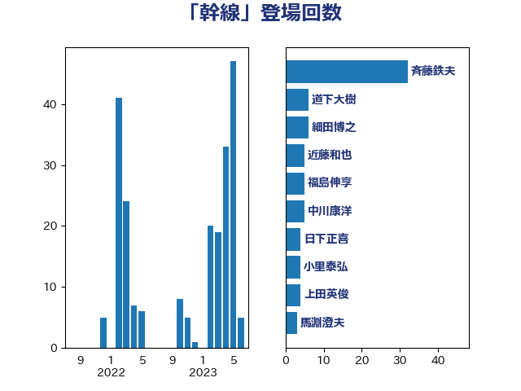

単語「幹線」

| 斉藤鉄夫 | 公明党 | 32 回 |
| 道下大樹 | 立憲民主党 | 6 回 |
| 細田博之 | 自由民主党 | 6 回 |
| 近藤和也 | 立憲民主党 | 5 回 |
| 福島伸享 | 無所属 | 5 回 |
| 中川康洋 | 公明党 | 5 回 |
| 日下正喜 | 公明党 | 4 回 |
| 小里泰弘 | 自由民主党 | 4 回 |
| 上田英俊 | 自由民主党 | 4 回 |
| 馬淵澄夫 | 立憲民主党 | 3 回 |
| 青島健太 | 日本維新の会 | 3 回 |
| 石原正敬 | 自由民主党 | 3 回 |
| 山下貴司 | 自由民主党 | 3 回 |
| 中野英幸 | 自由民主党 | 3 回 |
| 鬼木誠 | 立憲民主党 | 2 回 |
| 足立敏之 | 自由民主党 | 2 回 |
| 江田憲司 | 立憲民主党 | 2 回 |
| 木村英子 | れいわ新選組 | 2 回 |
| 山岸一生 | 立憲民主党 | 2 回 |
| 山口俊一 | 自由民主党 | 2 回 |
| 尾崎正直 | 自由民主党 | 2 回 |
| 小林一大 | 自由民主党 | 2 回 |
| 大口善徳 | 公明党 | 2 回 |
| 城井崇 | 立憲民主党 | 2 回 |
| 井坂信彦 | 立憲民主党 | 2 回 |
| 中根一幸 | 自由民主党 | 2 回 |
| 高橋千鶴子 | 日本共産党 | 1 回 |
| 長峯誠 | 自由民主党 | 1 回 |
| 長坂康正 | 自由民主党 | 1 回 |
| 豊田俊郎 | 自由民主党 | 1 回 |
| 谷田川元 | 立憲民主党 | 1 回 |
| 西銘恒三郎 | 自由民主党 | 1 回 |
| 荒井優 | 立憲民主党 | 1 回 |
| 芳賀道也 | 国民民主党 | 1 回 |
| 稲富修二 | 立憲民主党 | 1 回 |
| 石井準一 | 自由民主党 | 1 回 |
| 矢倉克夫 | 公明党 | 1 回 |
| 田村智子 | 日本共産党 | 1 回 |
| 瀬戸隆一 | 自由民主党 | 1 回 |
| 清水真人 | 自由民主党 | 1 回 |
| 浜野喜史 | 国民民主党 | 1 回 |
| 森屋隆 | 立憲民主党 | 1 回 |
| 本庄知史 | 立憲民主党 | 1 回 |
| 末次精一 | 立憲民主党 | 1 回 |
| 新垣邦男 | 立憲民主党 | 1 回 |
| 川合孝典 | 国民民主党 | 1 回 |
| 岬麻紀 | 日本維新の会 | 1 回 |
| 山崎誠 | 立憲民主党 | 1 回 |
| 尾辻秀久 | 無所属 | 1 回 |
| 大西健介 | 立憲民主党 | 1 回 |
| 吉井章 | 自由民主党 | 1 回 |
| 古川元久 | 国民民主党 | 1 回 |
| 加藤鮎子 | 自由民主党 | 1 回 |
| 佐々木さやか | 公明党 | 1 回 |
| 井林辰憲 | 自由民主党 | 1 回 |
| 三上えり | 立憲民主党 | 1 回 |
| たがや亮 | れいわ新選組 | 1 回 |
| こやり隆史 | 自由民主党 | 1 回 |
| おおつき紅葉 | 立憲民主党 | 1 回 |